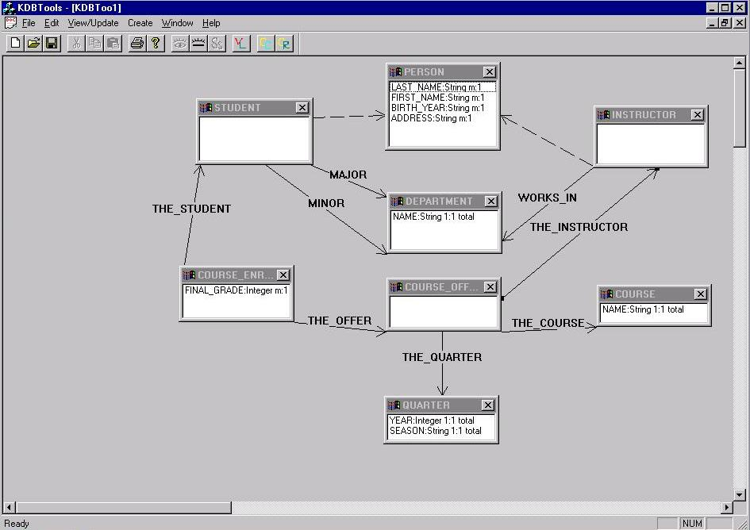

The following is a modified version of the previous
semantic schema that was created by a DBA. A supercategory "Person" and
some relations were added to the schema making it much simpler and easier
to understand than the relational schema.
